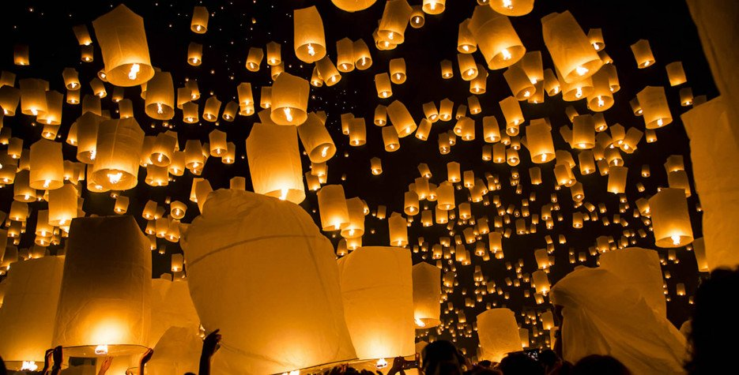
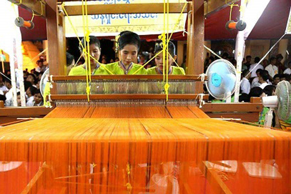
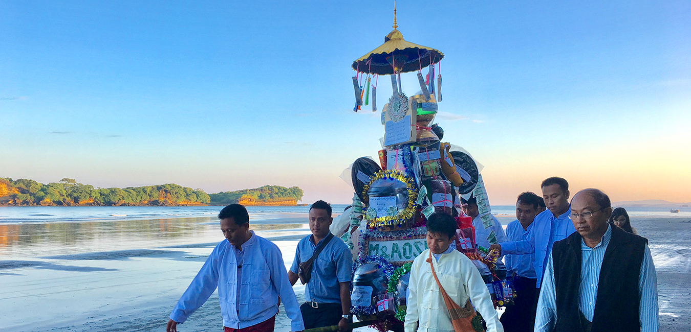
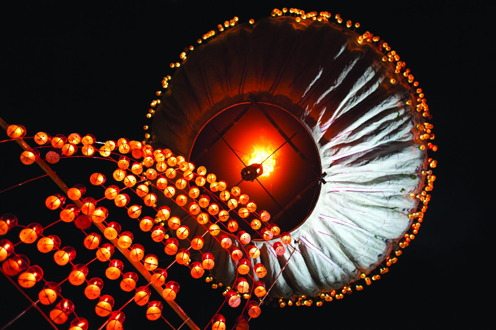
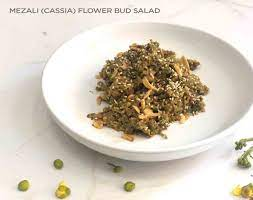

Tazaungdaiing Festival, also known as the Festival of light in Burma which celebrates in November every years. Tazaungdaing Festival is held in honor of thr God of lights which marked the awakening of the Hindu god Vishnu from his long sleep.Burmerse Buddhists later attached their own religious signficance to the festival, saying that this was the night that Siddhartha's mother, sensing that her son was about to renuciate weaving the traditional yellow robes for him.Tazaungdaing Festival contains others small festivals such as "Robe-weaving competition(Matho Thingan)", "Ka Htain Festival", Taunggy Hot Air-ballon Festival", "Eating Melzali Bud Salad", "Kyi Manoe Pwe" and so on.
History of Robe-weaving Competition(Matho Thingan) Matho Thingan (Yellow Robe) was started by Gotama Buddha's foster mother, Gotami, offering Matho-thingan in Buddha's lifetime. Myanmar kings and people observe this event as their tradition by holding Matho-thingan weaving competitions on the night of the full moon of Tazaungmon. |
History of Ka Htain Festival The Kathina festival, which originated 2,500 years ago, celebrates the largest alms-giving ceremony of the Buddhist year. The festival also celebrates the offerings of cloth that are given to the monks upon their leaving by the lay people. |
History of Taunggyi Hot Air-ballon Festival The origin of Taunggyi's hot-air balloons contest dates back to 1894, when the British first held hot air balloon competitions in Taunggyi, soon after the annexation of Upper Burma. |
History of Eating Melzali Bud Salad Cassia flower bud salad, also known as (mezali phu thoke) is a festive Burmese salad traditionally served during the full moon day of Tazaungmon.The salad's base ingredients includes freshly picked Siamese cassia flower buds, boiled potatoes, sliced onions, peanuts, sesame seed, garlic, seasoned with salt, oil, sesame seeds, and lemon juice. And Burmese believe that this salad is good for our health when we eat it between the limited time, so it became traditional. |
Another festival is "Kyimano Pwe" which means “Don't wake the crows up" in burmese.On that night of full-moon day, young men usually steal things or trick neighbours just for fun. In the next morning, people tell about the memorable moments of last night, "Kyimano Pwe" and they laugh and have fun together.